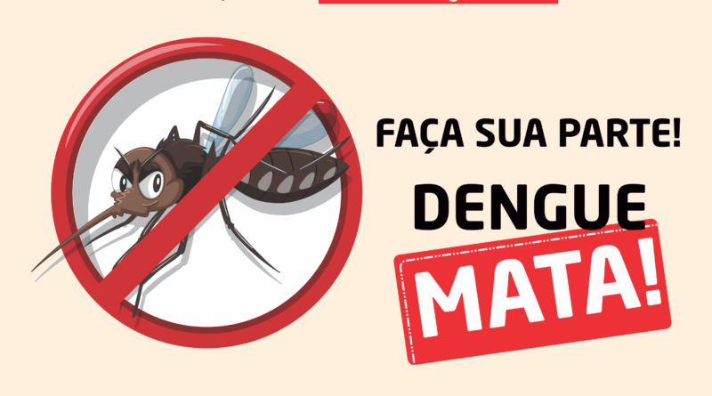

DENGUE MATA, Faça sua parte!
>
O que é a dengue ?
A dengue é uma doença febril aguda, sistêmica e dinâmica, variando desde casos assintomáticos a quadros graves, inclusive óbitos. Nos casos sintomáticos pode apresentar três fases clínicas: febril, crítica e de recuperação.
A primeira manifestação é a febre, geralmente acima de 38ºC, de início súbito e duração de 02 a 07 dias, associada à cefaléia, cansaço, mialgia, artralgia, dor retro-orbitária ou exantema. Com o declínio da febre (entre o 3º e 7º dia do início dos sintomas), grande parte dos pacientes recupera-se gradativamente. No entanto, alguns podem evoluir para a fase
crítica da doença, iniciando com sinais de alarme.
A dengue pode evoluir para remissão dos sintomas, ou pode agravar-se, exigindo constante reavaliação e observação, para que as intervenções sejam oportunas e os óbitos não ocorram.
Como é a transmissão da dengue?
O processo de transmissão da dengue começa a partir de uma pessoa já infectada com o vírus. Entre um dia antes da febre até o sexto dia da doença, ela se torna transmissível, mas somente quando o mosquito Aedes aegypti pica o infectado.
Depois disso, o mosquito leva consigo o vírus. Após oito a doze dias de incubação no mosquito, o vírus é transmitido para outras pessoas que forem picadas. Vale lembrar que o mosquito permanece o restante da vida infectado, o que dura entre 6 a 8 semanas.
Como se prevenir?
A prevenção eficiente consiste no combate ao vetor do vírus da dengue, o mosquito Aedes aegypti: eliminação e/ou controle de depósitos de água domiciliares, eliminação de lixo a céu aberto e investimento em saneamento básico de qualidade.
Métodos individuais incluem uso de repelentes à base de DEET (N-N-dietilmetatoluamida), IR3535 ou de Icaridina (exceto em crianças com menos de dois anos) nas partes mais expostas do corpo, principalmente durante o dia, utilização de roupas que cubram regiões vulneráveis à picada do mosquito, e mosquiteiro.
PARA ACESSAR O VÍDEO NO YOUTUBE